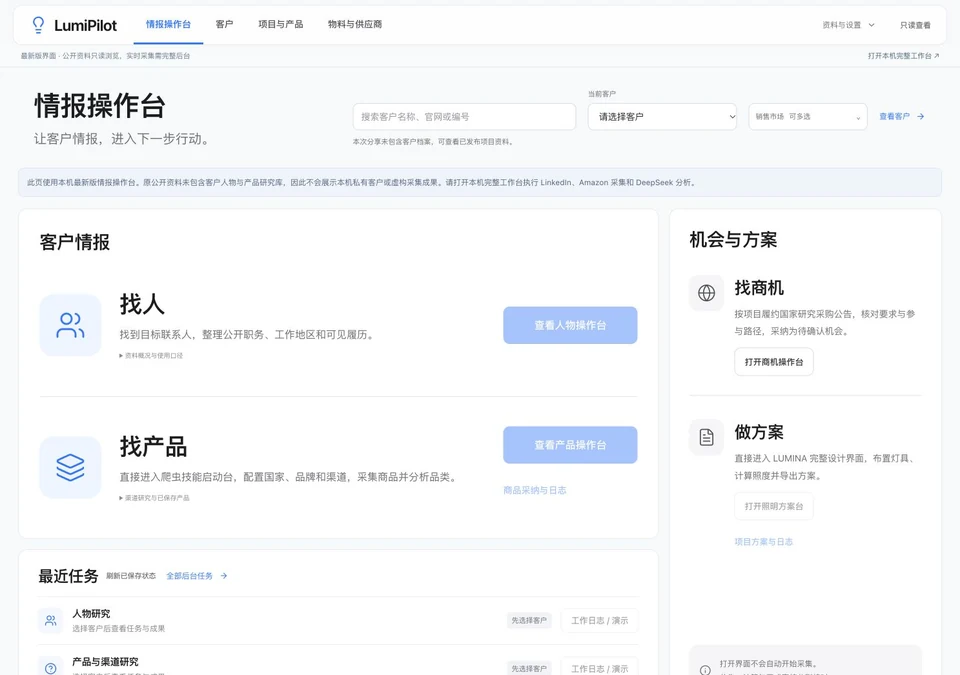
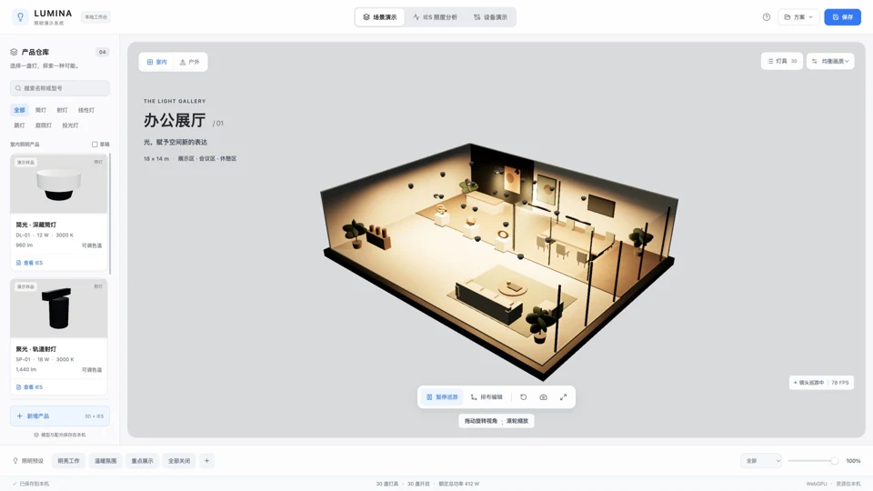
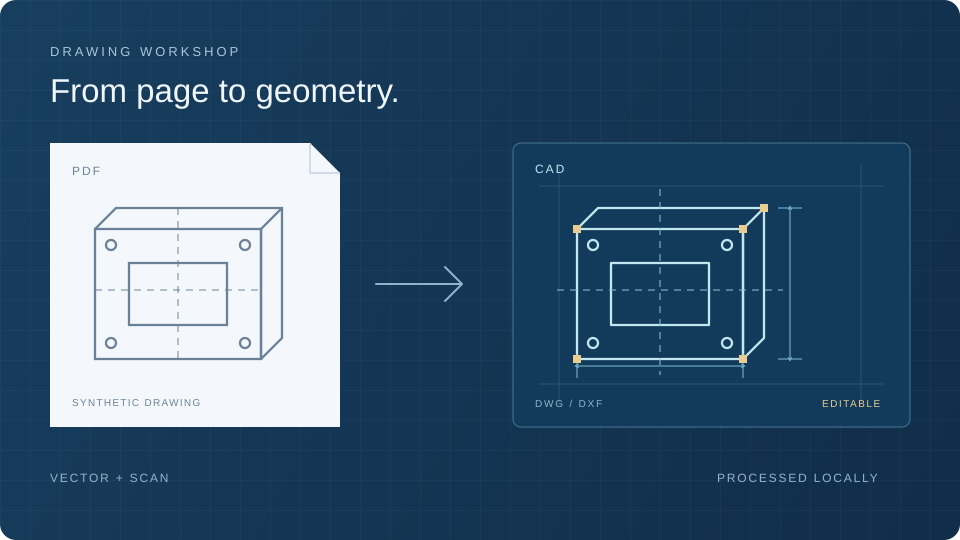

CUSTOMER INTELLIGENCE研发工具账号密码登录
LumiPilot
客户情报与照明方案工作台
找人、找产品、找商机、做方案，以统一情报界面连接客户研究与照明工程。
账号密码登录 · 线上只读 · 实时采集在本机
项目详情访问统计加载中
登录工作台后查看项目、资料与统计。
SELECTED WORK / DC WEB
照明工程、市场分析、研发决策与交互应用。
08个项目

CUSTOMER INTELLIGENCE客户情报与照明方案工作台
找人、找产品、找商机、做方案，以统一情报界面连接客户研究与照明工程。
账号密码登录 · 线上只读 · 实时采集在本机
登录工作台后查看项目、资料与统计。
Collect.
Compare.
Recommend.
商品爬虫与推品分析
从多来源商品采集到客户与友商规格对比，为目标市场整理推品依据与规格建议。
商品爬虫：采集 Amazon、Shopee 与品牌官网商品，支持暂停与恢复，按品牌、市场和品类归档，并导出 Excel / Markdown 报告。
推品分析：以客户产品为基线，对比目标市场同品类友商的规格与资料覆盖；结合产品逻辑选择，通过 DeepSeek 整理推品依据、核心规格、电路概念与外观提示词。
以上为完整工作台功能。在线演示可操作样例采集、导入 CSV 并在浏览器内计算规格、对比同市场商品、完成问卷生成规则建议，以及导出 CSV / Markdown；不执行实时采集或调用 DeepSeek。
Outdoor
Lighting.
Outdoor Lighting · 户外照明展示
从企业背景到户外灯具与工程案例，浏览产品系列及不同应用场景。
账号密码登录 · 登录页在新标签页打开

LIGHT IN SPACE场地布灯、成本与 IES 分析系统
从文字、草图和街区地图规划照明，核算 IES；独立采购页对比 MOQ 阶梯价、高光效升级、电费与回本期。
内置23款演示灯具，支持办公、园区、工厂、商城、运动场、楼宇及市政道路规划。可本机提取街区地图路网，核对尺寸后布灯；通过访问码调用云端DeepSeek进行文字规划、草图识别和参数补充，密钥仅保存在云端。IES核算布灯、照度、电费与采购，对比高光效、感应及DALI全周期成本，保留实际操作日志、产品导入、报告和方案打包。尺寸及隐藏布局需确认；设备与D4i反馈为模拟。 新增独立采购方案页：根据当前演示方案的灯具数量生成四种配置，比较初购预算、年电费、长期合计与简单回本期，支持 CSV 和完整对比导出。阶梯价由演示规则生成，光效、溢价和工程费为可调整假设，数据保存在浏览器中。
跨朝代攻城与实时战略
选择秦、汉、唐、宋、元或明，在 500 座真实地名城池间发展主城、征募军队并争夺王都。
单人练兵立即可用 · 朋友联机需另行配置服务器

PDF TO CAD / DRAWING WORKSHOP SUPPLIER DATA / DEEPSEEK / QUICK COSTS
SUPPLIER DATA / DEEPSEEK / QUICK COSTS采购协同工作台
结构化供应商资料，统一参数检索；新增注塑快速核价：DeepSeek读取报价与工艺文件，核对保存费率和零件产能，后续选料号、填数量即可复用。
六个工作区管理物料、实际供应商、数据导入、采购协同与成本行情。已有6家企业档案、1,023条公开目录记录与164类标准字段；供应商PDF与网页资料通过自己的DeepSeek提取，人工核对后入库。注塑模块新增快速核价、档案与DeepSeek读取、高级核算三个入口。读取XLSX、文字PDF、UTF-8 TXT/CSV或粘贴文字，先预览再发送，生成带原文引文的待核对费率和零件工艺草稿。供应商沿用现有资料，不预置虚构供应商；真实商务费率与工艺通过本地导入保存。核对后的模板按供应商分别关联零件的稳定生产合格产量、换模时间与另计费用，日常选料号、填数量即可单件或批量测算。缺少产量、费用范围或计费周期时不推测填值；高级核算保留。PDF、网页、行情与注塑读取共用页面内存Key；需求、报价和任务仍为业务模拟。
发布标准对所有供应商通用；用户自定义标准与个人候选保存在当前浏览器，通过导出/导入共享，不自动同步。原始规格及出处保留，单位不明或格式冲突不参与数值筛选，未知批准与商务条件不推定。Key仅在页面内存；实际付费AI调用需自己的账号验证。
没有找到匹配的项目
试试其他关键词，或查看全部项目。
使用原账号密码登录后，浏览新版情报操作台与已发布项目资料。界面以找人、找产品为重点，商机与方案位于右侧。线上保持只读；人物与产品实时采集、TED 研究和 LUMINA 本机操作需要完整服务。
登录后查看工作台使用指南 ↗使用账号和密码登录，选择市场和品类运行样例采集，可暂停、继续并查看日志；也可导入 CSV，在当前浏览器计算规格、筛选和对比商品，完成问卷后生成规则建议并导出 CSV / Markdown。演示不执行实时采集或调用 DeepSeek。访问域名已调整，原域名保存的导入记录不会自动迁移，可先导出后再导入。
登录照明市场工作台 ↗浏览公司介绍、户外灯具和工程案例。进入后使用网站账号和密码登录；访问权限由独立网站验证。
前往账号登录入口 ↗选择场景或上传草图、地图。道路可离线提取并叠加核对；在“DeepSeek连接”输入演示访问码可在线规划、识别图片和补充参数。确认场地尺寸与AI假设后生成布灯、照度、节能成本及采购方案。支持产品导入、报告导出与方案打包；不提供应用下载，设备仅模拟。
进入在线演示 ↗按课程学习词句，通过听音、选择和句子排序闯关，再用错题复习巩固。发音训练可查阅音标与发音规则，设备提供的越南语声音可能不同。
进入学习首页 ↗选择朝代后进入单人练兵，学习建设、征兵与攻城操作。单人模式直接在浏览器运行；与朋友联机需要另行部署并配置服务器。
进入游戏与玩法指南 ↗导入 PDF 或包含 PDF 的 RAR / ZIP，选择矢量或扫描模式并设置比例后开始转换。结果可逐页下载，或按 DWG / DXF 分别打包。扫描件输出轮廓，需复核线条与尺寸。图纸仅在当前浏览器处理，不上传、不展示历史；刷新后清空当前任务，请先下载结果。
进入图纸工坊 ↗在“成本与行情 → 注塑成本”选择“档案与DeepSeek读取”，沿用资料供应商，连接自己的DeepSeek并读取模型；上传XLSX、文字PDF、UTF-8 TXT/CSV或粘贴原文。PDF每批最多5页，全部来源最多60,000字符；先本地预览，确认发送后读取。逐条核对并保存费率模板，再将零件工艺关联到对应模板；稳定生产每小时合格件数、换模时间与另计费用缺失时须补充一次实际记录。返回快速核价，选料号、填数量，或粘贴最多100行批量核价；可导出结果和档案备份。整周期/按比例、费用范围和税费分别保留，不做同口径最低价推定。高级核算仍可使用。扫描PDF请先OCR；旧XLS另存XLSX。文件及档案不上传GitHub，Key刷新即清除。供应商目录上传、统一参数检索与行情刷新继续可用。
打开采购工作台 ↗LUMINA 的方案与模拟设备记录、越语冒险的学习进度保存在当前浏览器。切换设备或清除浏览器数据后，原记录可能无法继续使用；需要保留方案时，先使用项目内提供的导出功能。
资料日期、来源和计算范围以项目内部记录为准。LumiPilot 的概念模型与待核验标记保留原义；LUMINA 的照度分析仅计算人工直接光。工程应用前，请核对输入与适用条件。